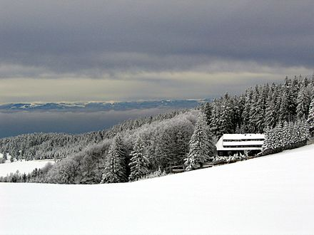

Der Feldberg ist mit 1493 m ü. NHN der höchste Berg in Baden-Württemberg. Er stellt
auch die höchste Erhebung aller deutschen Mittelgebirge dar und ist damit der höchste Berg Deutschlands
außerhalb der Alpen. Der Berg im Südschwarzwald dient zudem als Namensgeber der dazugehörigen Gemeinde
Feldberg.
Herzogenhorn
Das Herzogenhorn ist ein 1415,2 m ü. NHN hoher Berg im Südschwarzwald. Er liegt in
der Gemeinde Bernau im Schwarzwald im Landkreis Waldshut und gehört zum Naturschutzgebiet Feldberg.
Belchen
Der Belchen ist mit 1414 m ü. NHN nach Feldberg, Seebuck und dem Herzogenhorn die
vierthöchste Erhebung des Schwarzwaldes.
Seen
Titisee
Der Titisee ist ein See im südlichen Schwarzwald in Baden-Württemberg. Er bedeckt eine
Fläche von 1,3 km2 und ist durchschnittlich 20 m tief. Seine Entstehung verdankt er dem
Feldberg-Gletscher, dessen im Pleistozän entstandenen Moränen heute seine Ufer bilden.
Schluchsee
Der Schluchsee ist ein Stausee in der Gemeinde Schluchsee bei St. Blasien im
Landkreis Breisgau-Hochschwarzwald in Baden-Württemberg. Er liegt südöstlich des Titisees und ist der
größte See des Schwarzwaldes.
Mummelsee
Der Mummelsee ist ein Karsee auf 1028,5 m ü. NN Höhe am Abhang der Hornisgrinde im
Schwarzwald. Er ist 3,7 Hektar groß und 18 Meter tief. Er zählt zu den meistbesuchten Seen in
Baden-Württemberg, da er direkt an der Schwarzwaldhochstraße liegt. Die touristischen Einrichtungen am
See bilden den Wohnplatz Mummelsee der Gemeinde Seebach im Ortenaukreis.
Aussichtstürme

Feldbergturm
Auf dem Seebuck befindet sich der Feldbergturm, ein ehemaliger Funkturm, der als
Aussichtsturm dient und seit 2013 ein Schinkenmuseum beherbergt. In den Sommermonaten kann im
höchstgelegenen Trauzimmer Baden-Württembergs im 11. Stock des Turms geheiratet werden.
Schlossbergturm
Der Schlossbergturm ist ein 33,27 Meter hoher, 2002 errichteter Aussichtsturm
auf dem Schlossberg am Rande der Altstadt von Freiburg im Breisgau.
Brendturm
Der Brendturm auf dem Brend wurde 1905 vom Schwarzwaldverein erbaut. Der Turm selbst
ist rund und besteht aus Granitquadern. Über eine in der unteren Hälfte außenliegende und in der oberen
Hälfte innenliegende Wendeltreppe kann man den etwa 17 Meter hohen Turm besteigen.
Den Aussichtsturm hat mancher Eisenbahnfreund verkleinert zu Hause stehen, da er als Vorlage für ein
entsprechendes Modell dient.